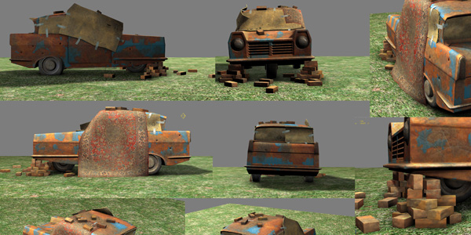

Pablo Bollansée

3D
Three-dimensional
Concerning 3D, I do not know a lot of some things, but I know a little of a lot. I have a basic knowledge of both low- and high-poly modeling, both subdivision and sculpting. I also know what diffuse, specular, glossiness, height, bump and normal maps are and how to use and make them. Even rigging, skinning and animation are aspects of 3D I know. Lastly I also have some knowledge of both particles and materials in UDK.
You won’t find the best 3D-artist in me, though I do know artist-talk.
Low Poly


High Poly